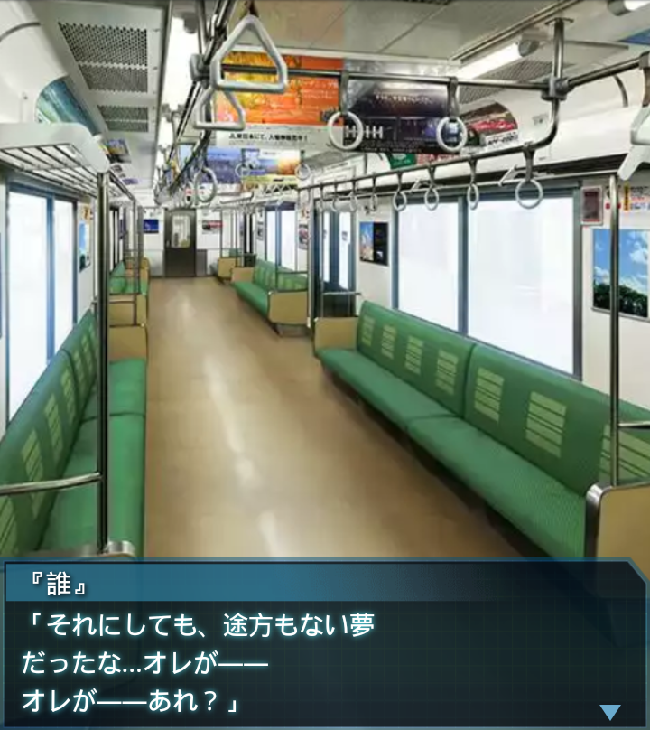

エンディング
篁唯依
「…あ号標的ブロック内の崩落と
粉塵が収まります…」
篁唯依
「あ号標的の破壊を確認。
オリジナルハイヴは……
陥落しました」
篁唯依
「生命反応…ゼロ。
残念ながら『誰』大尉は…」
篁唯依
――ドクン！
崔亦菲
「い、今、何か変な感じが…。
あんたも感じた？篁中尉」
篁唯依
「うん…感じた。
世界が…分離したのだろう」
崔亦菲
「だ…だよね！？世界をジャンプ
する時の感覚だったもんね！！
じゃあ…作戦は…大尉は…」
篁唯依
「ああ…『誰』大尉は、
任務を成し遂げた。その命を
賭して――夢を叶えたんだ」
香月夕呼
「…そう、わかったわ。
報告ありがとう」
神宮司まりも
「さ、作戦はどうなったの！？」
香月夕呼
「………………」
神宮司まりも
「そ、その顔…まさか――」
香月夕呼
「……成功よ」
神宮司まりも
「ホントッ！？やったわ！！
もう、そうやって驚かすのは
趣味が悪いわよ！！」
香月夕呼
「…………ごめんね～。
私性格悪いから～。ほら、すぐに
全世界に向けて通達して！」
神宮司まりも
「了解！！
これで…これで人類は
救われるのね～！」
香月夕呼
「…そんな単純な話じゃないんだ
けど」
神宮司まりも
「え？何か言った？」
香月夕呼
「いえ、何でもないわ」
香月夕呼
「…それでも、少なくとも。
人類絶滅確定のシナリオは
回避できたわ」
香月夕呼
「ありがとう…『誰』。
こき使って悪かったわね。
ゆっくり休んで頂戴」
『誰』
「――ハッ！！」
『誰』
「………………」
「次は京都、京都――」
『誰』
「オレは一体…。
今までのは…夢だったのか？」

『誰』
「くそ、スマホで遊んでいるうちに
いつの間にか眠っちゃったんだな。
…よく落とさなかったもんだ」

『誰』
「それにしても、途方もない夢
だったな…オレが――
オレが――あれ？」
『誰』
「オレが…何だったっけ？
くそ、すっかり忘れちまったよ」
『誰』
「まあいいや、夢なんてそんな
もんさ」
………
『誰』
「さて…ちょっと早く来すぎた
かな？」
――ドン！
『誰』
「あ、すみません」
女性
「いえ、こちらこそ」
『誰』
（…うわ、かなりの美人だな。
でもどこかで会った事が
あるような…）
女性
「あの、何か？」
『誰』
「あ、いえ。何でもないです」
『誰』
（気のせいだな…）
女性
「そうですか。
では…失礼します」